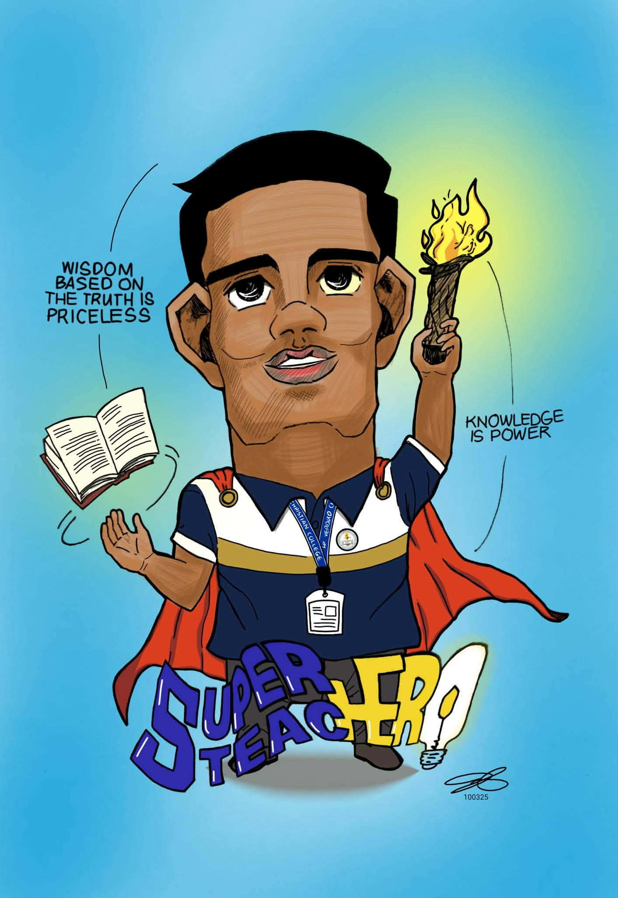
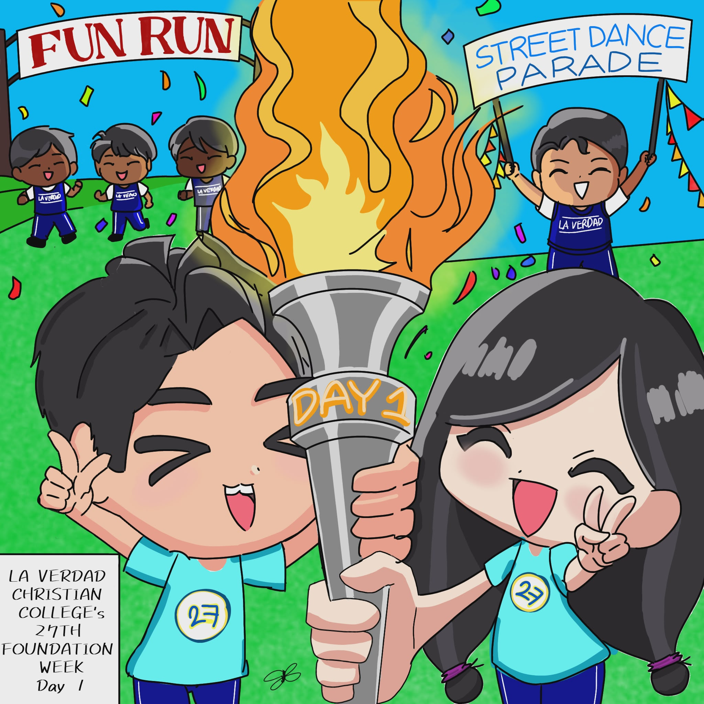
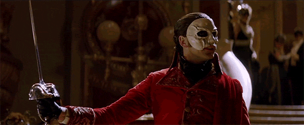
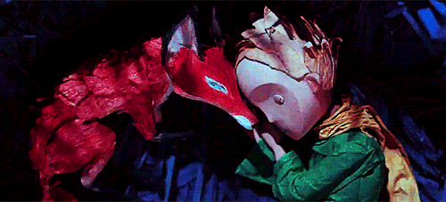
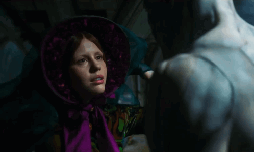

01. TRADITIONAL ART
Sketching is where my heart resides! As a cartoonist, I love the raw texture of graphite and the challenge of bringing characters to life on paper with every stroke of my pen.


02. DIGITAL ARTS
Stepping into the digital realm allows me to play with infinite palettes. I enjoy creating clean, stylized illustrations that blend my traditional roots with modern graphic techniques.


03. MUSIC
Music is the soundtrack to my creativity. From the haunting melodies of Radiohead to the theatrical brilliance of Webber, these sounds fuel my daily inspiration and coding sessions!
My 2025 Top Artists
01 MITSKI ⋆ 02 THE SMITHS ⋆ 03 ARCTIC MONKEYS
04 CIGARETTES AFTER SEX ⋆ 05 BILLIE EILISH
06 RADIOHEAD ⋆ 07 LAUFEY ⋆ 08 THE MARÍAS
09 ANDREW LLOYD WEBBER ⋆ 10 NIRVANA
04. FILMS
I am captivated by stories that are dark, poetic, and visually striking. I often look to cinema for inspiration in lighting, mood, and dramatic world-building.
The Phantom of the Opera

The Little Prince

Frankenstein

05. PHOTOGRAPHY
Through the lens, I capture the world in its most candid moments. I prefer high-contrast, moody shots that find beauty in shadows and simple, everyday compositions.